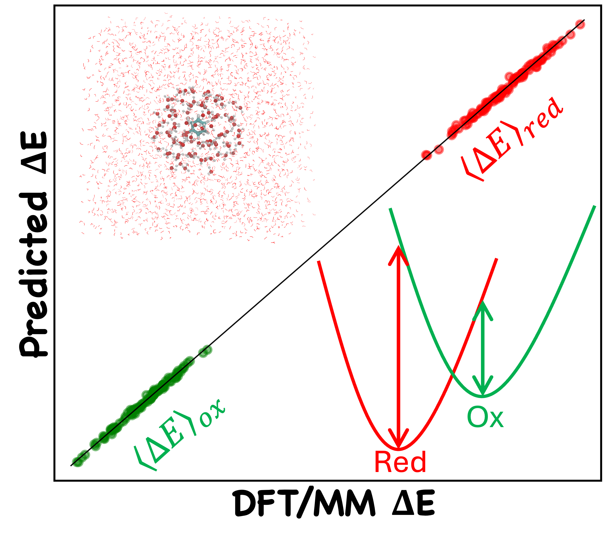
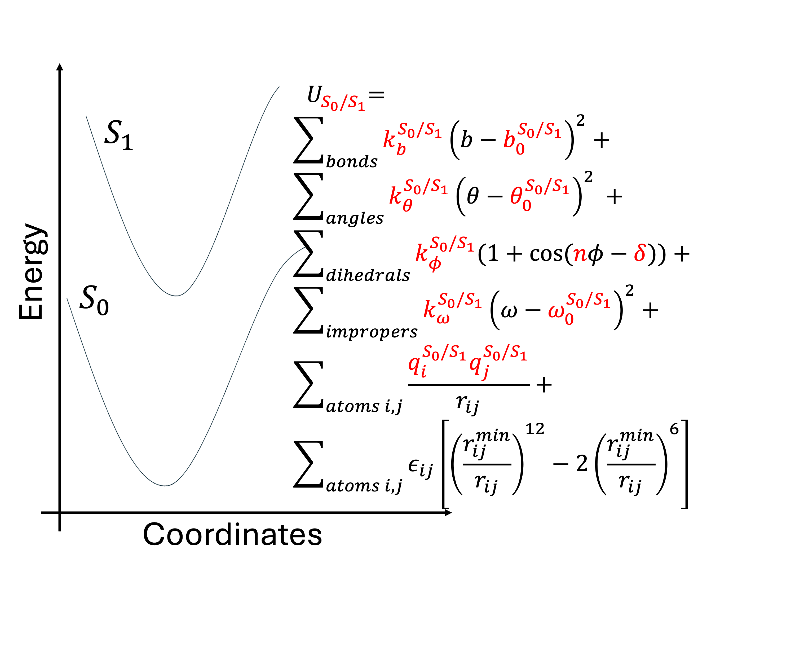
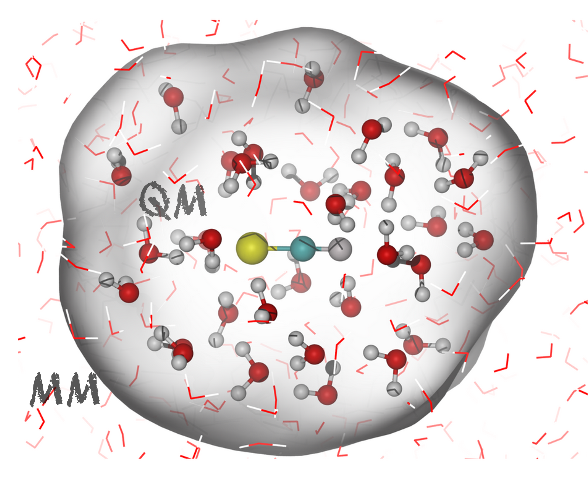
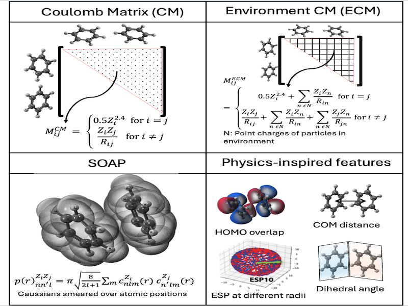

Machine Learning Model for Predicting Vertical Energy Gaps
Calculation of free energy in redox processes using linear response approximation requires sampling the vertical energy gaps (VEGs) in different potential energy surfaces. I developed machine learning models to predict VEGs in biomolecular systems using features derived from computationally efficient semi-empirical calculations.
A hybrid training strategy combining aqueous-phase data with limited number of protein environment samples enhances the model transferability to biologically relevant systems. The workflow integrated physics-inpired features, statistical learning methods, and a unique hybrid training approach to enable scalable estimation of redox properties in large molecular systems.
Tools: Q-Chem, Scikit-learn, Pytorch, QM/MM simulations (NAMD/ORCA), feature engineering
Related publications: JCTC (2024) , JPCB (2025)

Excited State Force Field Parameterization via ffTK-ORCA Interface
Force field based classical molecular dynamics (MD) allow sampling over timescales spanning microseconds, but are limited to ground state of the molecule. Sampling dynamics in the excited state is limited to expensive QM/MM calculations. I developed workflows to obtain excited state force field parameters through integration of ORCA quantum chemistry package with the force-field toolkit.
We estimated bonded and electrostatic parameters for several systems, including the Green Fluoroscent Protein (GFP) chromophore in their ground and first electronic excited states. We then ran MD simulations using these parameters and computed properties, such as excitation energies, dipole moments, structural rearrangements for bencharking purposes.
Tools: VMD, ORCA, tcl scripting, TD-DFT calculation

Accelerating tensor contractions in electronic structure calculations using STRUMPACK.
STRUctured Matrix PACkage (STRUMPACK) provides linear algebra routines for sparse and dense rank-structured matrices. I explored algorithms to integrate matrix compression and accelerating tensor contractions typically present in coupled-cluster calculations done in Q-Chem.
The project involved sfotware development and combining two different software packages into one. The project was highly collborative and involved three research groups and Q-Chem Inc.
Tools: Q-Chem, C++, software development

Computational modeling of one and two-photon spectra of aqueous thiocyanate ion
Linear and non-linear spectroscopies provide complementary information about molecular systems and require different computational approaches to model. In this project I investigated UV-Vis and two-photon absorption spectra of the thiocyanate anion in water. The work explored how solvent arrangement and resulting solute-solvent interactions influence spectroscopic properties and excited state behavior.
The project combined QM/MM dynamics simulation and equation-of-motion coupled-cluster (EOM-CC) methods to calculate the linear and non-linear spectra. We also investigated the different nature of excited states shown by anions in aqueous environment, often referred to as charge transfer to solvent (CTTS) states.
Tools: Q-Chem, Gabedit (visualization tool), Coupled-cluster calculations
Related publications: JCC (2023) , Mol Phys (2022)

Additional Projects

Core-Level Spectroscopy
Basis sets strategies for computational core-ionization spectroscopy.

Machine Learning Electronic Coupling
Machine learning electronic coupling between homodimers and heterodimers.

Membrane-bound MtrCAB Simulations
Modeling electron transport protein MtrCAB system of Shewanella oneidensis.

GGS Protein Modeling and Simulation
Modeling geranylgeranyl pyrophosphate synthase (GGS) protein and expression in E-coli.

Frozen-Density Embedding
FDE Theory applied to charge transfer to solvent excitations in aqueous thiocynate system.